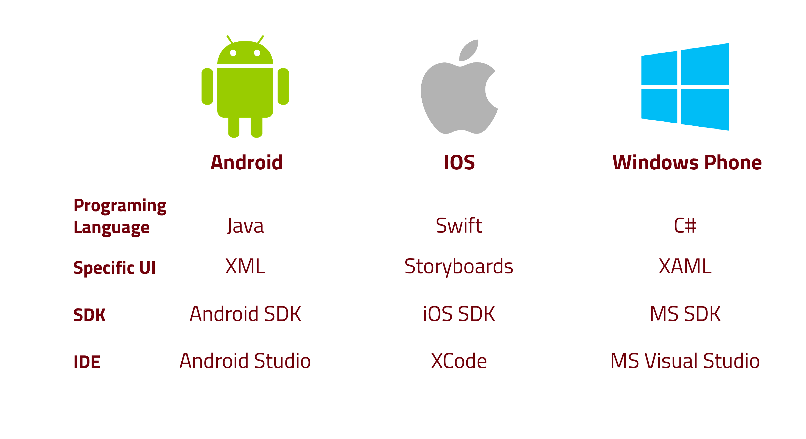
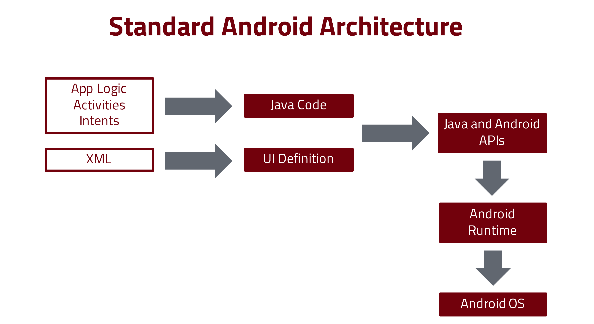
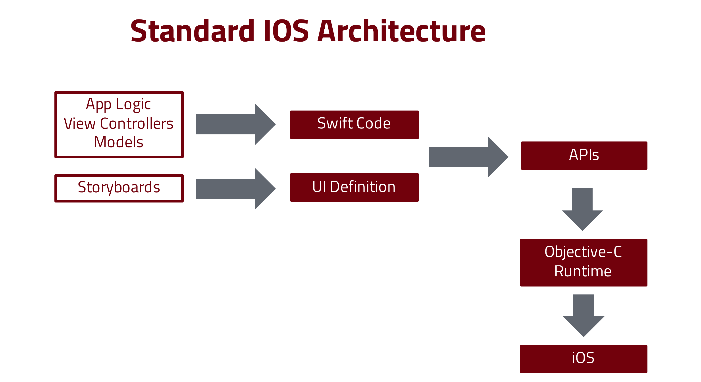
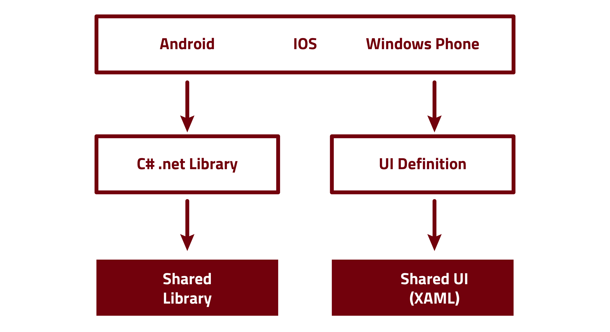
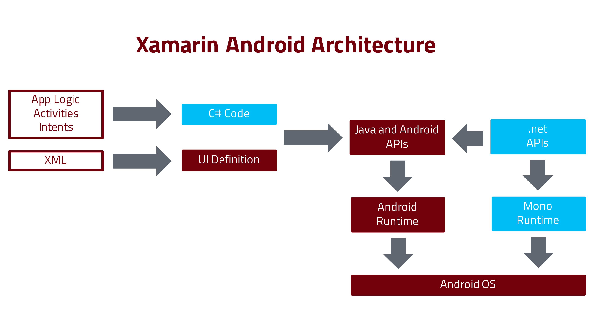
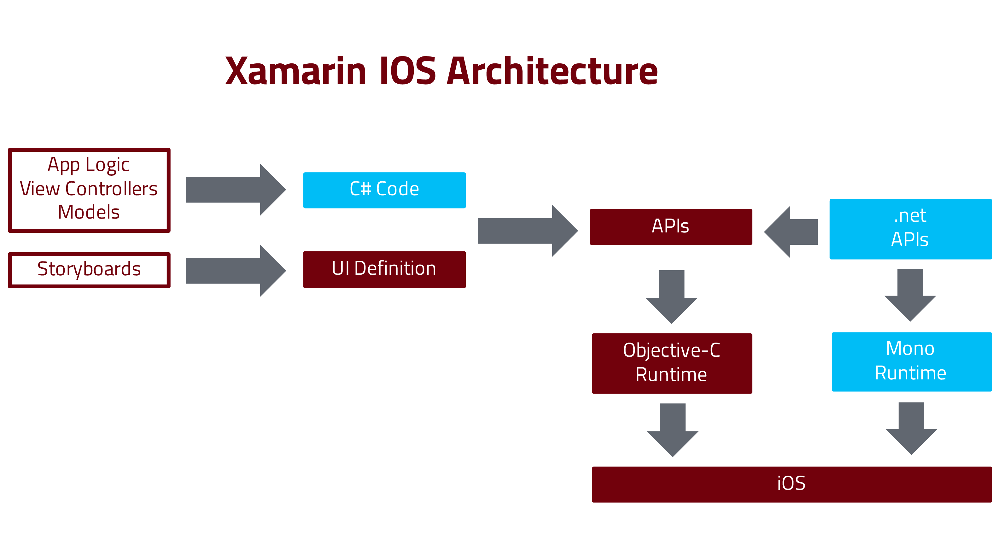
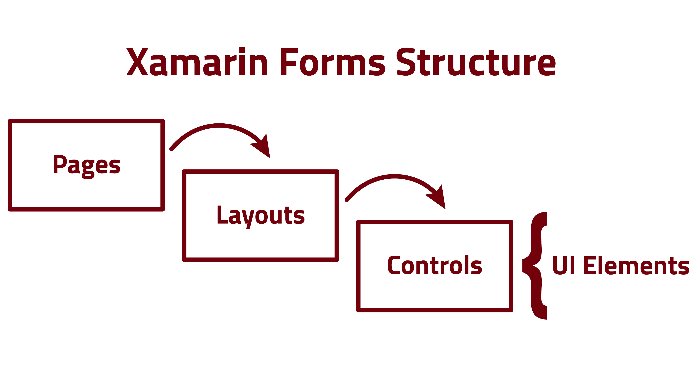

Using Xamarin Forms as an App Development Platform
A brief description of the platform and the project I am working with some of the pros and cons I faced when starting to develop using Xamarin.
What is Xamarin and How it works
Xamarin is a development platform to build native apps for multiple platforms on a shared C# codebase. It uses the same IDE, language, and APIs to code apps for Android, IOS and Windows Phone.
The development of mobile apps is in high demand, but to be able to reach all the key device platforms like Android, iOS and Windows Phone you need to master three different frameworks, each of them with its learning curves. Even if you focus on the two main streams (Android and IOS), you will end up with a lot of work to be done.
When you develop for Android, you have to use the Android SDK and develop in Java language using IDEs such as Android Studio or IntelliJ IDEA. For the IOS, you use the apple IOS SDK and the XCode IDE where you code in Swift language.

In Android basically, you write Java Code for your app logic, Activities and Intents and define your user interface using XML files.

In IOS, on the other hand, you use Swift to code app logic, View Controllers and Models and define the user interface in Storyboards.

The Xamarin Framework offers four different types of projects:
- Xamarin Android
- Xamarin IOS
- Xamarin Windows Phone
- Xamarin Forms
As a cross-platform framework, Xamarin allows a programmer to create apps for Android, IOS and Windows Phone using a common IDE and programming language regardless of the target device. If you are a C# .net programmer, you will not have problems to start developing apps, since you are familiar with the Visual Studio IDE and the programming language.

If you are building Android or IOS apps using Xamarin Android or Xamarin IOS you still have to define specific elements for those environments. For instance, to define user interfaces in an Android project, you would create XML files, and in an IOS one, you would use Storyboards.


The main advantage in Xamarin is the fourth type of project: Xamarin Forms. Xamarin Forms provides a single shared interface across all supported platforms. By sharing the interface, you need to define it only once, and the framework will be responsible for converting the forms UI into the corresponding native UI on the target device.

Xamarin is considered a fast framework when compared to other frameworks for multiple platforms because it targets a specific hardware and the apps are compiled for native performance.
A brief description of the project
I started using Xamarin for a project to develop an app for a pet store. This app would target only IOS and Android devices and will have the following main features:
- Control of user login and profile
- Allow a customer to register his pets information regarding gender, age, physical characteristics, behaviour and health
- Control Vaccines shots, Veterinarian appointments, Medicines prescribed and any other event related to a pet life by providing alerts and a calendar schedule
- Offer an online shop for pet products and pet food
- Provide a news feed associated with all sorts of pets
As you can see this is a large project and the app itself is part of a larger enterprise provided by other supporting systems. APIs developed in C# .net will lay the backend for the app. That is one of the main factors that influenced the choice of Xamarin as the development platform for the app.
Pros and Cons
When we started the project, we evaluated the possibility of building the project using Android Studio and XCode. But that would delay the development until everyone could be at the same level in both frameworks. Another option was to use HTML based applications that are converted to apps. Unfortunate, this approach has a performance issue, and it does not allow to have access to the device’s hardware. But what exactly are the main advantages of using Xamarin as the framework for this project?
Pros
- The development team was using Visual Studio and C# as the main framework for development which means a lesser learning curve for them if the development is done using C#
- As I said, compared to other multi-platform, Xamarin apps are faster because they run on native devices and it can access the device hardware like sensors and camera
- By using Xamarin Forms, we only have one code for the interface for both Android and IOS
Cons
- We would have to learn two different frameworks and programming languages with different learning curves
- This framework is new and constantly evolving which means that finding resources to help in development is difficult since many times the information is outdated and no longer valid. Also, the IDE has some bugs and also changes from time to time
- Although Xamarin Forms provides a faster way less redundant to develop for IOS and Android, unfortunately, its UI isn’t as rich as the native UI.
This last disadvantage was for me the most significant. The UI provided by Xamarin Forms is basic and will meet most of the requirements to develop apps. But if you need to provide a more sophisticated experience you have to rely on third-party components or develop your own.
The lack of detail is not a huge problem, but we are on a tight schedule, and the interface improvements are going to be left for the end of the project.
In short, there is no right answer to what is the best path to build apps. It all depends. As I see it, the choice you will make of the framework to develop an app depends on a series of factors like the size and experience of the team, how much time you have to come up with a solution, etc.
References
Xamarin Platform:: Date Accessed: 2017-08-25
Apple Developer:: Date Accessed: 2017-08-25
Android Developer:: Date Accessed: 2017-08-25
Xamarin Developer:: Date Accessed: 2017-09-25
Visual Studio for mac:: Date Accessed: 2017-08-25
Visual Studio Getting Started:: Date Accessed: 2017-08-25